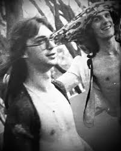

¡LA BOMBA DEL AÑO!
En una charla sin filtros, David Lebón rompe el silencio y confiesa uno de los momentos más bizarros, excéntricos y desopilantes de su carrera con Serú Girán. “Fue en un hotel, creo que en Mendoza… no me acuerdo bien. Lo que sí me acuerdo es que estábamos con Charly, y él me dice: ‘Che, ¿y si recibimos a Moro así, en bolas?’”, arranca David mientras se tapa la cara con las manos, entre risa y vergüenza.
NOS DICE
Yo no quería, ¡te juro que no quería! Pero ya conocés a Charly… te convence con tres frases.” La escena es digna de una película de Fellini en ácido: dos íconos del rock argentino completamente desnudos, esperando a su baterista como si fuera lo más normal del mundo. “Moro entró y se quedó helado. No sabía si reírse, putearnos o salir corriendo.” Pero la cosa no quedó ahí. Como salido de una novela de espionaje, un fotógrafo apareció por la puerta segundos después. “Fue la única vez que toqué con Charly… y sin ropa.”
“¡Yo no sabía que venía nadie más! Entró el tipo y ¡zas! flash, flash, flash… nos sacó tres fotos. Yo me tapé como pude, pero Charly se quedó posando. Estaba chocho.” ¿Qué pasó con esas fotos? “Ni idea. Creo que terminaron en una revista sueca de arte moderno… o en la casa de Charly. No sé. Pero lo loco es que a Moro le quedó el trauma. No volvió a entrar a una habitación sin golpear primero.” Y remata entre risas: " No vuelvo a entrar a un lugar sin tocar la puerta"
